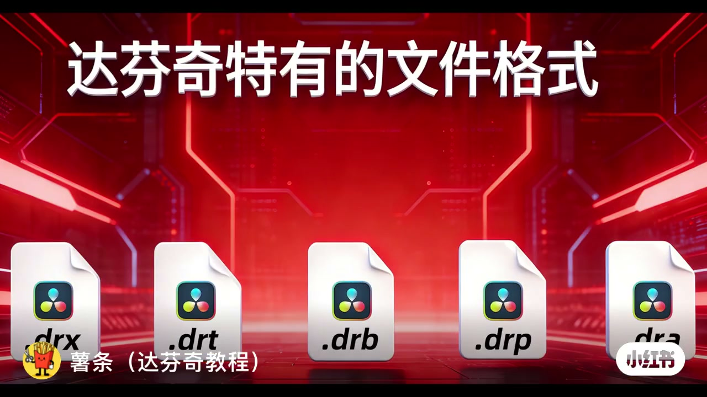
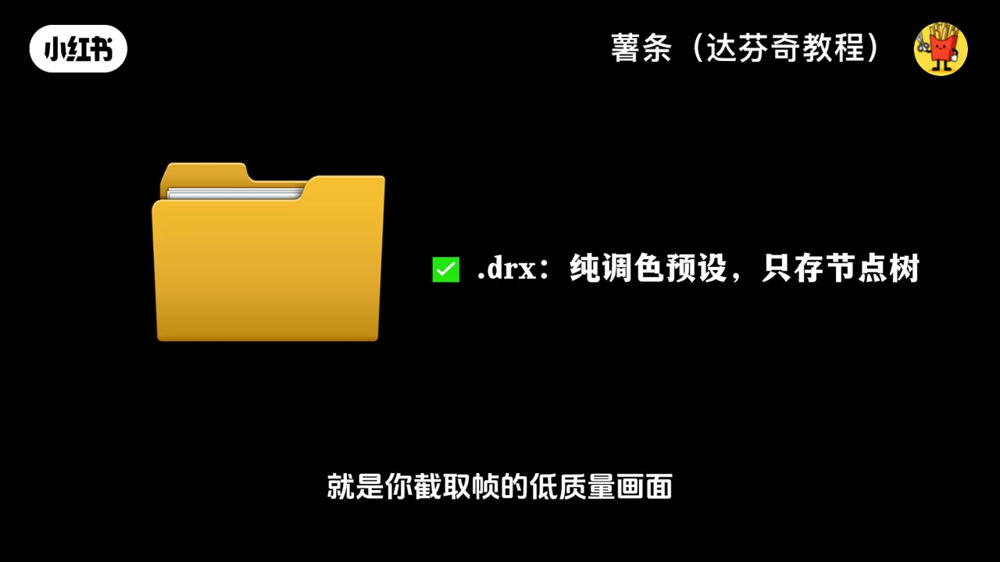
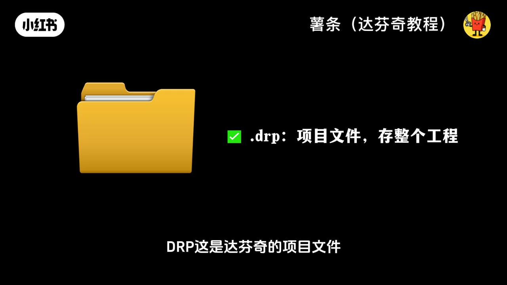
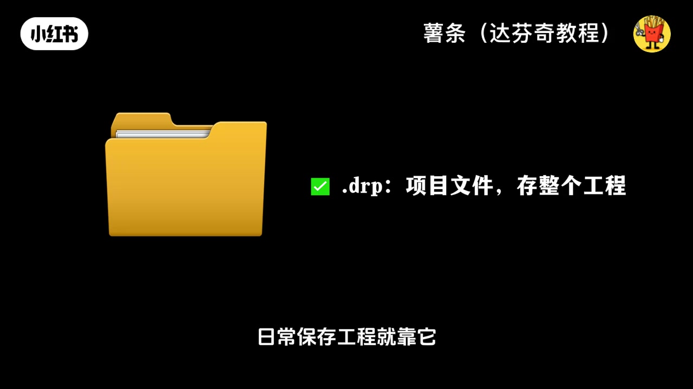
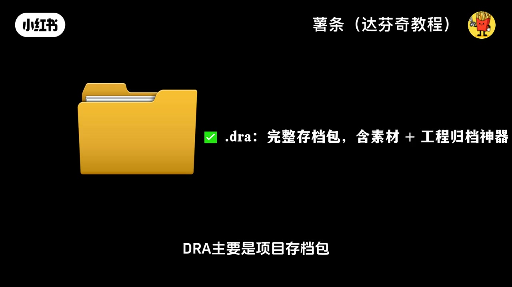
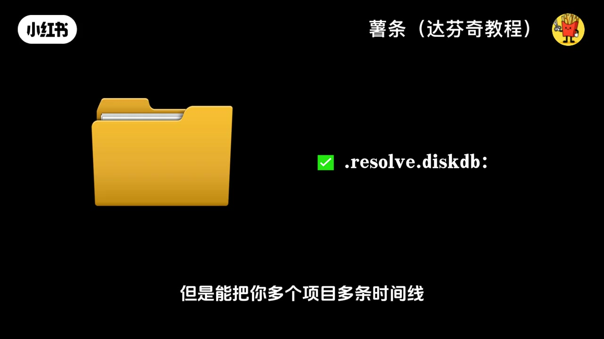

内容要点
「达芬奇特有的文件格式！ 达芬奇文件格式 达芬」教程要点：达芬奇的文件格式一堆后缀到底啥区别 → 今天一分钟全给你讲明白 → DRX纯纯的调色信息文件 → 不带任何媒体素材…
知识结构
达芬奇的文件格式一堆后缀到底啥区别
它都能完整保存
最爱是项目存档包
- 达芬奇的文件格式一堆后缀到底啥区别
- 今天一分钟全给你讲明白
- DRX纯纯的调色信息文件
- 不带任何媒体素材
- 直装调色信息和节点数
达芬奇的文件格式一堆后缀到底啥区别
00:00–00:25达芬奇的文件格式一堆后缀到底啥区别
达芬奇的文件格式一堆后缀到底啥区别；今天一分钟全给你讲明白；DRX纯纯的调色信息文件；不带任何媒体素材；直装调色信息和节点数；另外提一嘴；它的缩略图就是你截取真的低质量画面；方便你快速识别调色预设；DRT达芬奇的时间线专属格式；不含素材；它只管一条时间线；这条时间线上的调色、视效、剪辑、混音所有信息


00:25–00:49它都能完整保存
它都能完整保存；单条时间线分享用它最合适；DRP这是达芬奇的项目文件；不含媒体素材；但是能装下一个项目里的多条时间线；不管是调色、视效还是混音；所有项目内的信息都能囊括；日常保存工程就靠它；DRB式素材；相隔式不含素材；却能在一个项目里导入其他多个项目的多条时间线信息；整合工程超方便

00:48–01:11最爱是项目存档包
最爱是项目存档包；能把项目文件、原始素材、代理素材还有渲染缓存；一次性打包带走；所有时间线的全流程信息都包含；跨设备协作长期归档；选它就对了；最后还有个；它是达芬奇专属的项目库备份文件；重点是啥；不含任何媒体素材；但是能把你多个项目多条时间线；还有调色、视效、剪辑这些所有信息全给你存好



口述/画面要点（36段）
结合 Whisper medium 与画面大字整理；专有名词已校对。
达芬奇的文件格式一堆后缀到底啥区别
今天一分钟全给你讲明白
DRX纯纯的调色信息文件
不带任何媒体素材
直装调色信息和节点数
另外提一嘴
它的缩略图就是你截取真的低质量画面
方便你快速识别调色预设
DRT达芬奇的时间线专属格式
不含素材
它只管一条时间线
这条时间线上的调色、视效、剪辑、混音所有信息
它都能完整保存
单条时间线分享用它最合适
DRP这是达芬奇的项目文件
不含媒体素材
但是能装下一个项目里的多条时间线
不管是调色、视效还是混音
所有项目内的信息都能囊括
日常保存工程就靠它
DRB式素材
相隔式不含素材
却能在一个项目里导入其他多个项目的多条时间线信息
整合工程超方便
最爱是项目存档包
能把项目文件、原始素材、代理素材还有渲染缓存
一次性打包带走
所有时间线的全流程信息都包含
跨设备协作长期归档
选它就对了
最后还有个
它是达芬奇专属的项目库备份文件
重点是啥
不含任何媒体素材
但是能把你多个项目多条时间线
还有调色、视效、剪辑这些所有信息全给你存好